ไนลอน 12 โปร่งใส↗
ไนลอน 12 โปร่งใส↗ไนลอน 12 โปร่งใส
Techinherit TN900
12ไนลอนใสสําหรับเลือกโดยคํานึงถึงความใสของแสง ความยืดหยุ่น และความเหนียวในโครงสร้างโปร่งใส อิเล็กทรอนิกส์ และผลิตภัณฑ์อุตสาหกรรม
เลือกภาษา
TECHINHERIT / วัสดุ
วัสดุวิศวกรรม
วัสดุสําหรับการใช้งานของคุณ
เรียกดูสินค้าตามหมวดหมู่วัสดุและสํารวจคุณสมบัติ การอ้างอิงคุณสมบัติ และการใช้งาน
ไนลอน 12 โปร่งใส↗12ไนลอนใสสําหรับเลือกโดยคํานึงถึงความใสของแสง ความยืดหยุ่น และความเหนียวในโครงสร้างโปร่งใส อิเล็กทรอนิกส์ และผลิตภัณฑ์อุตสาหกรรม
 ไนลอน 12 โปร่งใส↗
ไนลอน 12 โปร่งใส↗ไนลอนใสแบบไม่มีรูปร่าง ผสมผสานความแข็งแรง การดูดซึมน้ําต่ํา และทนต่อสารเคมี สําหรับการใช้งานในยานยนต์ อิเล็กทรอนิกส์ และบรรจุภัณฑ์
 ไนลอน 12 โปร่งใส↗
ไนลอน 12 โปร่งใส↗12ไนลอนโปร่งใสที่มีการส่งผ่านสูง สําหรับประเมินความเหนียวและความต้านทานการแตกร้าวจากความเครียดในชิ้นส่วนออปติก ตัวเรือนใส และชิ้นส่วนอุตสาหกรรม
 ไนลอน 12 โปร่งใส↗
ไนลอน 12 โปร่งใส↗ไนลอนใสจากชีวภาพสําหรับประเมินความแข็งแรง การดูดซึมน้ําต่ํา และความต้านทานการไฮโดรไลซิสในชิ้นส่วนบรรจุภัณฑ์ยานยนต์ อิเล็กทรอนิกส์ และพรีเมียม
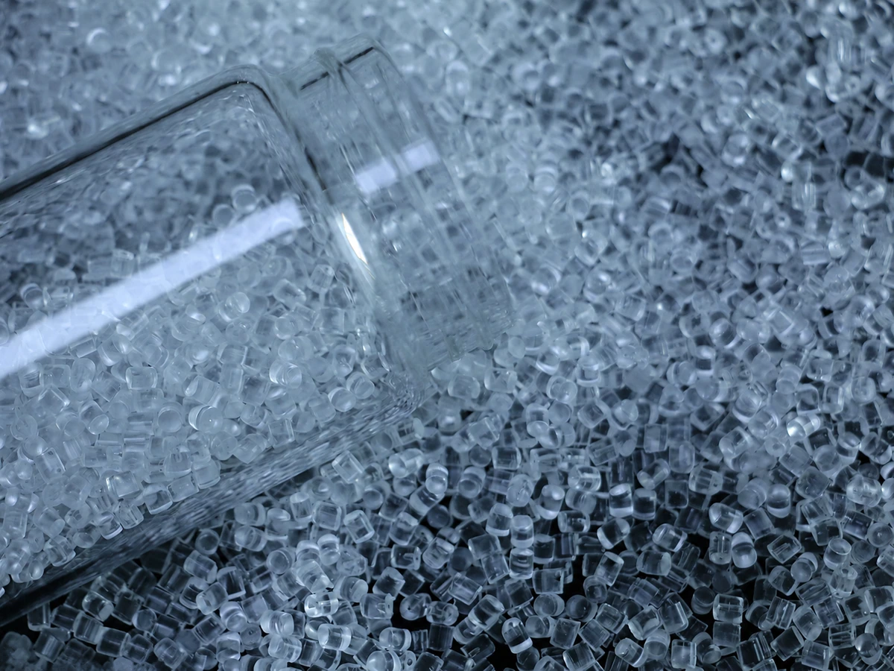
ไนลอน 12 โปร่งใส↗12ไนลอนใสเพื่อความทนความร้อน ความเหนียว และรูปลักษณ์ที่ชัดเจนในภาชนะ อิเล็กทรอนิกส์ และชิ้นส่วนออปติก;ยืนยันความสอดคล้องของสัมผัสสําหรับการใช้งานที่ตั้งใจไว้
 ไนลอนสายโซ่ยาว↗
ไนลอนสายโซ่ยาว↗ไนลอนสายโซ่ยาวที่ผลิตจากชีวภาพ เพื่อการดูดซึมน้ําต่ํา ความเหนียวที่อุณหภูมิต่ํา และความคงตัวของขนาดในเส้นใยโมโนฟิลาเมนต์ การเคลือบสายเคเบิล และชิ้นส่วนกลไก
 ไนลอนสายโซ่ยาว↗
ไนลอนสายโซ่ยาว↗ไนลอนสายโซ่ยาวสําหรับความเหนียว ทนต่อน้ํามัน และการใช้งานทางไฟฟ้า รวมถึงขนแปรง เส้นใยโมโนฟิลาเมนต์ การเคลือบสายเคเบิล และชิ้นส่วนเครื่องมือ
 ไนลอนสายโซ่ยาว↗
ไนลอนสายโซ่ยาว↗ไนลอนโซ่ยาวสูตรชีวภาพ เพื่อความเหนียว ความแข็งแรง การดูดซับความชื้นต่ํา และควบคุมการหดตัวในชิ้นส่วนยานยนต์ เครื่องมือ และอุตสาหกรรม
 ไนลอนสายโซ่ยาว↗
ไนลอนสายโซ่ยาว↗ไนลอนโซ่ยาว ลดการดูดซับความชื้น ทนต่อน้ํามัน และเสถียรภาพในกระบวนการอัดรีด ฉีดขึ้นรูป เป่าขึ้นรูป และท่อ
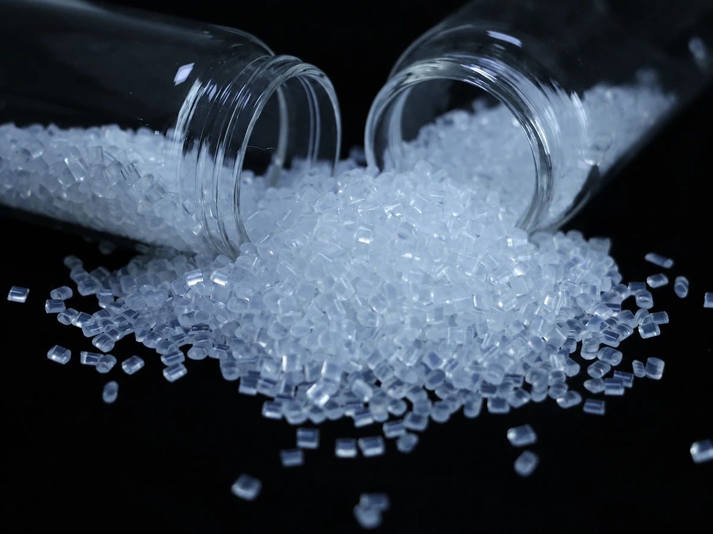
ไนลอนสายโซ่ยาว↗ไนลอนสายยาวสําหรับความเหนียวที่อุณหภูมิต่ํา การดูดซึมน้ําต่ํา และความคงตัวของมิติในการอัดรีด การฉีดขึ้นรูป การเป่าขึ้นรูป และการแปรรูปผง
 วัสดุคอมโพสิตเสริมคาร์บอนไฟเบอร์↗
วัสดุคอมโพสิตเสริมคาร์บอนไฟเบอร์↗ วัสดุคอมโพสิตเสริมคาร์บอนไฟเบอร์↗
วัสดุคอมโพสิตเสริมคาร์บอนไฟเบอร์↗ทิศทางคอมโพสิตคาร์บอนไฟเบอร์ที่อิงตามPCพิจารณาการกระจายไฟเบอร์ การออกแบบโครงสร้าง และการประมวลผลเพื่อประเมินความต้องการน้ําหนักและความแข็งแรงร่วมกัน
 วัสดุคอมโพสิตเสริมคาร์บอนไฟเบอร์↗
วัสดุคอมโพสิตเสริมคาร์บอนไฟเบอร์↗ทิศทางคอมโพสิตคาร์บอนไฟเบอร์ที่อิงตามETFEพิจารณาการกระจายไฟเบอร์ การออกแบบโครงสร้าง และการประมวลผลเพื่อประเมินความต้องการน้ําหนักและความแข็งแรงร่วมกัน
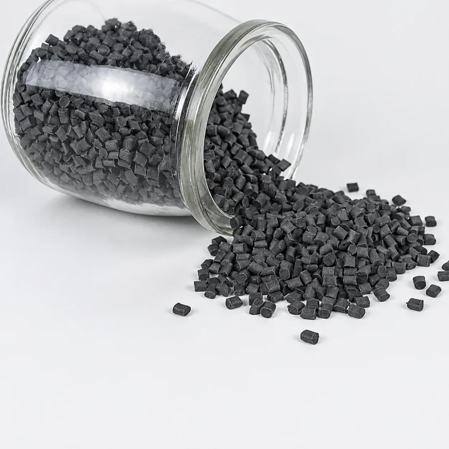
วัสดุคอมโพสิตเสริมคาร์บอนไฟเบอร์↗ทิศทางคอมโพสิตคาร์บอนไฟเบอร์ที่อิงตามPA6พิจารณาการกระจายของเส้นใย การออกแบบโครงสร้าง และการประมวลผลเพื่อประเมินความต้องการด้านน้ําหนักเบาและความแข็งแรงร่วมกัน
 วัสดุคอมโพสิตเสริมคาร์บอนไฟเบอร์↗
วัสดุคอมโพสิตเสริมคาร์บอนไฟเบอร์↗ทิศทางคอมโพสิตคาร์บอนไฟเบอร์ที่อิงตามPA66พิจารณาการกระจายไฟเบอร์ การออกแบบโครงสร้าง และกระบวนการเพื่อประเมินความต้องการด้านน้ําหนักเบาและความแข็งแรงร่วมกัน
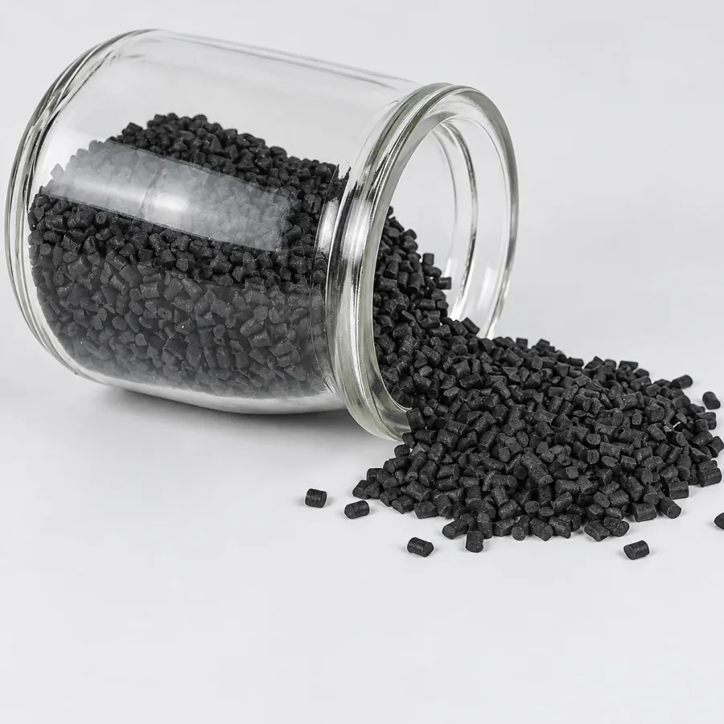
วัสดุคอมโพสิตเสริมคาร์บอนไฟเบอร์↗ทิศทางคอมโพสิตคาร์บอนไฟเบอร์ที่อิงตามPA12พิจารณาการกระจายไฟเบอร์ การออกแบบโครงสร้าง และกระบวนการเพื่อประเมินความต้องการน้ําหนักและความแข็งแรงร่วมกัน
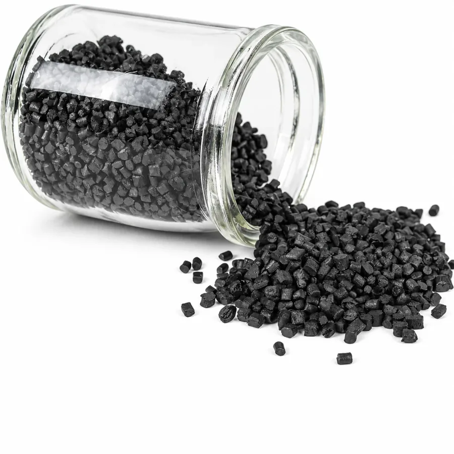
วัสดุคอมโพสิตเสริมคาร์บอนไฟเบอร์↗ทิศทางคอมโพสิตคาร์บอนไฟเบอร์ที่อิงกับ PEEK พิจารณาการกระจายไฟเบอร์ การออกแบบโครงสร้าง และการประมวลผลเพื่อประเมินความต้องการด้านน้ําหนักเบาและความแข็งแรงร่วมกัน
 วัสดุคอมโพสิตเสริมคาร์บอนไฟเบอร์↗
วัสดุคอมโพสิตเสริมคาร์บอนไฟเบอร์↗ทิศทางคอมโพสิตคาร์บอนไฟเบอร์ที่อิงกับ PVDF พิจารณาการกระจายไฟเบอร์ การออกแบบโครงสร้าง และการประมวลผลเพื่อประเมินความต้องการน้ําหนักเบาและความแข็งแรงร่วมกัน
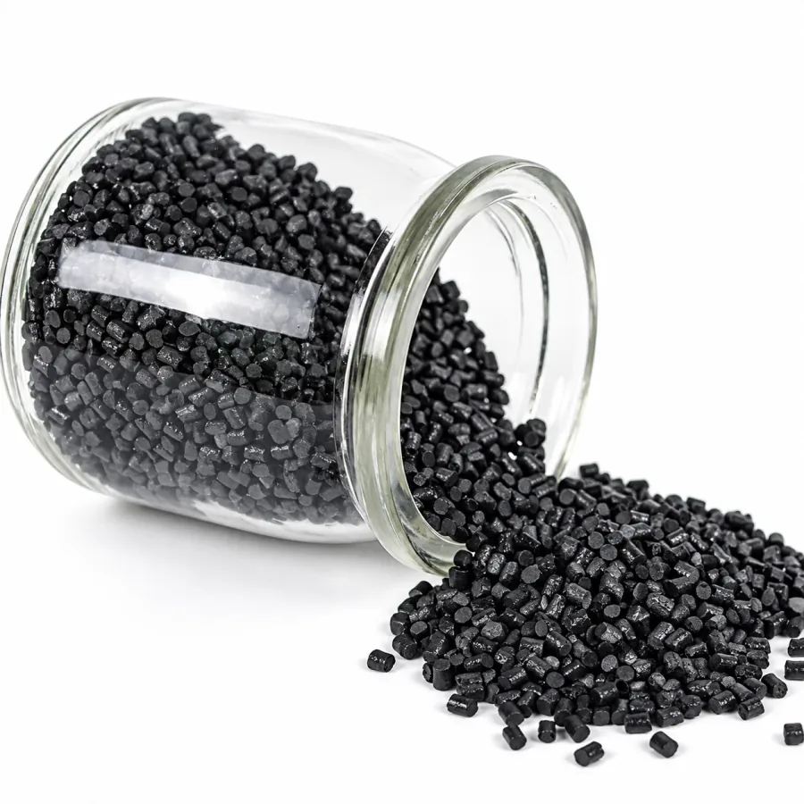
วัสดุคอมโพสิตเสริมคาร์บอนไฟเบอร์↗ทิศทางคอมโพสิตคาร์บอนไฟเบอร์ที่อิงตาม PEI พิจารณาการกระจายใย การออกแบบโครงสร้าง และการประมวลผลเพื่อประเมินความต้องการด้านน้ําหนักเบาและความแข็งแรงร่วมกัน
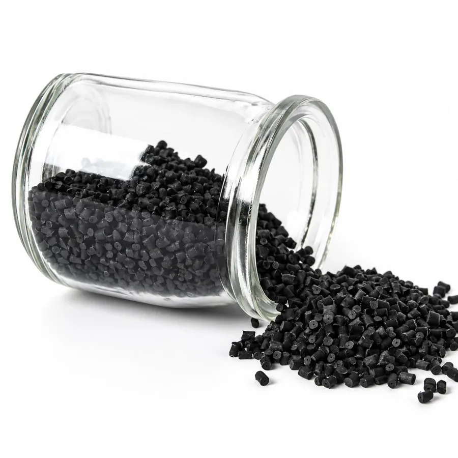
วัสดุคอมโพสิตเสริมคาร์บอนไฟเบอร์↗ทิศทางคอมโพสิตคาร์บอนไฟเบอร์ที่ใช้ PFA พิจารณาการกระจายไฟเบอร์ การออกแบบโครงสร้าง และการประมวลผลเพื่อประเมินความต้องการด้านน้ําหนักเบาและความแข็งแรงร่วมกัน
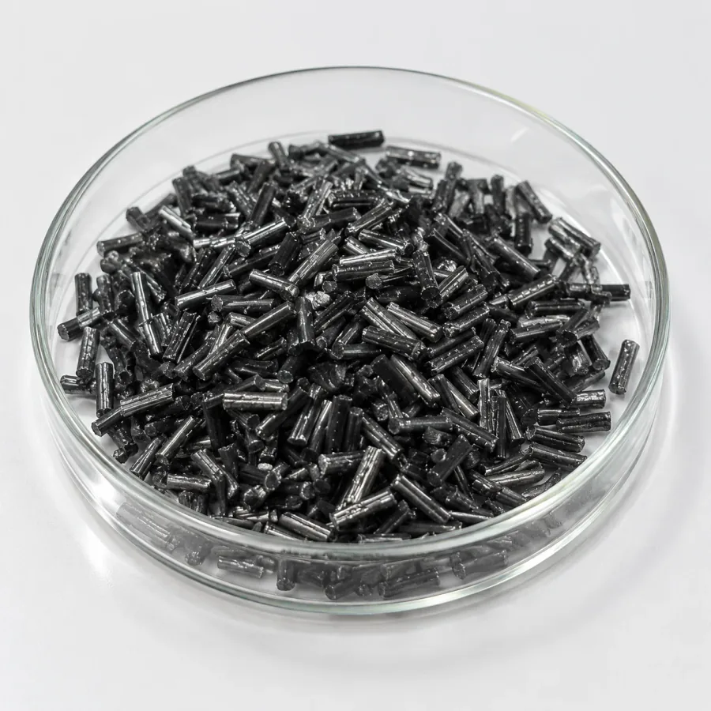
วัสดุคอมโพสิตเสริมคาร์บอนไฟเบอร์↗ทิศทางคอมโพสิตคาร์บอนไฟเบอร์ที่อิงกับเรซินเทอร์โมพลาสติกพิจารณาการกระจายเส้นใย การออกแบบโครงสร้าง และกระบวนการเพื่อประเมินความต้องการด้านน้ําหนักเบาและความแข็งแรงร่วมกัน
 วัสดุนำไฟฟ้าและป้องกันไฟฟ้าสถิต↗
วัสดุนำไฟฟ้าและป้องกันไฟฟ้าสถิต↗วัสดุป้องกันไฟฟ้าสถิตถาวรที่อิงจากPA ใช้เทคโนโลยีการดัดแปลงโพลิเมอร์ต้านไฟฟ้าสถิตที่มีทิศทางการปรุงสูตรหน่วงไฟแนวทางการใช้งานรวมถึงชิ้นส่วนรถยนต์ อุปกรณ์เหมืองแร่ เครื่องมือไฟฟ้า ภาชนะ แท่ง แผ่น ตัวเรือน ท่อ ล้ออุตสาหกรรม เส้นใยโมโนฟิลาเมนต์ และปากกา;ตรวจสอบความทนทานและสภาพการผลิตสําหรับเกรดและชิ้นส่วนสําเร็จรูป
 วัสดุนำไฟฟ้าและป้องกันไฟฟ้าสถิต↗
วัสดุนำไฟฟ้าและป้องกันไฟฟ้าสถิต↗วัสดุป้องกันไฟฟ้าสถิตถาวรที่ผลิตจากPA ใช้เทคโนโลยีการดัดแปลงไฟฟ้าสถิตแบบโพลิเมอร์แนวทางการใช้งานรวมถึงชิ้นส่วนยานยนต์ อุปกรณ์ทําเหมือง เครื่องมือไฟฟ้า ภาชนะ แท่ง แผ่น ตัวเรือน ท่อ ล้ออุตสาหกรรม เส้นใยโมโนฟิลาเมนต์ และปากกา;ตรวจสอบความทนทานและสภาพการแปรรูปสําหรับเกรดและชิ้นส่วนสําเร็จรูป
 วัสดุนำไฟฟ้าและป้องกันไฟฟ้าสถิต↗
วัสดุนำไฟฟ้าและป้องกันไฟฟ้าสถิต↗วัสดุป้องกันไฟฟ้าสถิตถาวรที่ผลิตจากPA ใช้เทคโนโลยีการดัดแปลงไฟฟ้าสถิตแบบโพลิเมอร์แนวทางการใช้งานรวมถึงชิ้นส่วนยานยนต์ อุปกรณ์ทําเหมือง เครื่องมือไฟฟ้า ภาชนะ แท่ง แผ่น ตัวเรือน ท่อ ล้ออุตสาหกรรม เส้นใยโมโนฟิลาเมนต์ และปากกา;ตรวจสอบความทนทานและสภาพการแปรรูปสําหรับเกรดและชิ้นส่วนสําเร็จรูป
 วัสดุนำไฟฟ้าและป้องกันไฟฟ้าสถิต↗
วัสดุนำไฟฟ้าและป้องกันไฟฟ้าสถิต↗วัสดุป้องกันไฟฟ้าสถิตถาวรที่ผลิตจากPA ใช้การดัดแปลงด้วยโพลิเมอร์ต้านไฟฟ้าสถิตร่วมกับเทคโนโลยีเสริมใยแก้วแนวทางการใช้งานรวมถึงชิ้นส่วนยานยนต์ อุปกรณ์ทําเหมือง เครื่องมือไฟฟ้า ภาชนะ แท่ง แผ่น ตัวเรือน ท่อ ล้ออุตสาหกรรม เส้นใยโมโนฟิลาเมนต์ และปากกา;ตรวจสอบความทนทานและสภาพการแปรรูปสําหรับเกรดและชิ้นส่วนสําเร็จรูป
 วัสดุนำไฟฟ้าและป้องกันไฟฟ้าสถิต↗
วัสดุนำไฟฟ้าและป้องกันไฟฟ้าสถิต↗วัสดุป้องกันไฟฟ้าสถิตถาวรที่ผลิตจากPA ใช้การดัดแปลงด้วยโพลิเมอร์ต้านไฟฟ้าสถิตร่วมกับเทคโนโลยีเสริมใยแก้วแนวทางการใช้งานรวมถึงชิ้นส่วนยานยนต์ อุปกรณ์ทําเหมือง เครื่องมือไฟฟ้า ภาชนะ แท่ง แผ่น ตัวเรือน ท่อ ล้ออุตสาหกรรม เส้นใยโมโนฟิลาเมนต์ และปากกา;ตรวจสอบความทนทานและสภาพการแปรรูปสําหรับเกรดและชิ้นส่วนสําเร็จรูป
 วัสดุนำไฟฟ้าและป้องกันไฟฟ้าสถิต↗
วัสดุนำไฟฟ้าและป้องกันไฟฟ้าสถิต↗วัสดุสลายพลังงานไฟฟ้าสถิตที่อิงกับPA ใช้เทคโนโลยีเสริมใยโลหะแนวทางการใช้งานรวมถึงชิ้นส่วนรถยนต์ อุปกรณ์เหมืองแร่ เครื่องมือไฟฟ้า ภาชนะ แท่ง แผ่น ตัวเรือน ท่อ ล้ออุตสาหกรรม เส้นใยโมโนฟิลาเมนต์ และปากกา;ตรวจสอบความต้านทานและสภาพการผลิตสําหรับเกรดและชิ้นส่วนสําเร็จรูป
 วัสดุนำไฟฟ้าและป้องกันไฟฟ้าสถิต↗
วัสดุนำไฟฟ้าและป้องกันไฟฟ้าสถิต↗วัสดุนําไฟฟ้าที่อิงกับPA ใช้เทคโนโลยีเสริมใยโลหะแนวทางการใช้งานรวมถึงชิ้นส่วนยานยนต์ อุปกรณ์ทําเหมือง เครื่องมือไฟฟ้า ภาชนะ แท่ง แผ่น ตัวเรือนไฟฟ้า ท่อ ล้ออุตสาหกรรม เส้นใยโมโนฟิลาเมนต์ และปากกา;ตรวจสอบความทนทานและสภาพการผลิตสําหรับเกรดและชิ้นส่วนสําเร็จรูป
 วัสดุนำไฟฟ้าและป้องกันไฟฟ้าสถิต↗
วัสดุนำไฟฟ้าและป้องกันไฟฟ้าสถิต↗วัสดุนําไฟฟ้าที่อิงกับPA ใช้เทคโนโลยีการปรับเปลี่ยนการนําไฟฟ้าเพื่อความต้องการความต้านทานต่ําแนวทางการใช้งานรวมถึงชิ้นส่วนรถยนต์ อุปกรณ์ทําเหมือง เครื่องมือไฟฟ้า ภาชนะ แท่ง แผ่นโลหะ ตัวเรือน ท่อ ล้ออุตสาหกรรม เส้นใยโมโนฟิลาเมนต์ และปากกา;ตรวจสอบความทนทานและสภาพการแปรรูปสําหรับเกรดและชิ้นส่วนสําเร็จรูป
 วัสดุนำไฟฟ้าและป้องกันไฟฟ้าสถิต↗
วัสดุนำไฟฟ้าและป้องกันไฟฟ้าสถิต↗วัสดุสแย่งพลังงานไฟฟ้าสถิตที่อิงกับPA ใช้เทคโนโลยีเสริมคาร์บอนไฟเบอร์แนวทางการใช้งานรวมถึงชิ้นส่วนยานยนต์ อุปกรณ์เหมืองแร่ เครื่องมือไฟฟ้า ภาชนะ แท่ง แผ่น ตัวเรือน ท่อ ล้ออุตสาหกรรม โมโนฟิลาเมนต์ และปากกา;ตรวจสอบความทนทานและสภาพการแปรรูปสําหรับเกรดและชิ้นส่วนสําเร็จรูป
 วัสดุนำไฟฟ้าและป้องกันไฟฟ้าสถิต↗
วัสดุนำไฟฟ้าและป้องกันไฟฟ้าสถิต↗วัสดุสแตติกที่สลายพลังงานตามPA ใช้เทคโนโลยีเสริมคาร์บอนไฟเบอร์พร้อมทิศทางการปรุงสูตรทนไฟแนวทางการใช้งานรวมถึงชิ้นส่วนยานยนต์ อุปกรณ์เหมืองแร่ เครื่องมือไฟฟ้า ภาชนะ แท่ง แผ่น ตัวเรือน ท่อ ล้ออุตสาหกรรม เส้นใยโมโนฟิลาเมนต์ และปากกา;ตรวจสอบความทนทานและสภาพการแปรรูปสําหรับเกรดและชิ้นส่วนสําเร็จรูป
 วัสดุนำไฟฟ้าและป้องกันไฟฟ้าสถิต↗
วัสดุนำไฟฟ้าและป้องกันไฟฟ้าสถิต↗วัสดุนําไฟฟ้าที่ผลิตจากPA ใช้เทคโนโลยีเสริมคาร์บอนไฟเบอร์แนวทางการใช้งานรวมถึงชิ้นส่วนยานยนต์ อุปกรณ์เหมืองแร่ เครื่องมือไฟฟ้า ภาชนะ แท่ง แผ่น ตัวเรือนไฟฟ้า ท่อ ล้ออุตสาหกรรม โมโนฟิลาเมนต์ และปากกา;ตรวจสอบความทนทานและสภาพการผลิตสําหรับเกรดและชิ้นส่วนสําเร็จรูป
 วัสดุนำไฟฟ้าและป้องกันไฟฟ้าสถิต↗
วัสดุนำไฟฟ้าและป้องกันไฟฟ้าสถิต↗วัสดุนําไฟฟ้าที่ผลิตจากPA ใช้เทคโนโลยีเสริมด้วยคาร์บอนไฟเบอร์เพื่อความต้องการความต้านทานต่ําแนวทางการใช้งานรวมถึงชิ้นส่วนรถยนต์ อุปกรณ์ทําเหมือง เครื่องมือไฟฟ้า ภาชนะ แท่ง แผ่น ตัวเรือน ท่อ ล้ออุตสาหกรรม เส้นใยโมโนฟิลาเมนต์ และปากกา;ตรวจสอบความทนทานและสภาพการผลิตสําหรับเกรดและชิ้นส่วนสําเร็จรูป
 วัสดุนำไฟฟ้าและป้องกันไฟฟ้าสถิต↗
วัสดุนำไฟฟ้าและป้องกันไฟฟ้าสถิต↗วัสดุสแตติกที่สลายพลังงานตามPA ใช้เทคโนโลยีดัดแปลงคาร์บอนดําแนวทางการใช้งานรวมถึงชิ้นส่วนยานยนต์ อุปกรณ์ทําเหมือง เครื่องมือไฟฟ้า ภาชนะ แท่ง แผ่น ตัวเรือน ท่อ ล้ออุตสาหกรรม โมโนฟิลาเมนต์ และปากกา;ตรวจสอบความทนทานและสภาพการผลิตสําหรับเกรดและชิ้นส่วนสําเร็จรูป
 วัสดุนำไฟฟ้าและป้องกันไฟฟ้าสถิต↗
วัสดุนำไฟฟ้าและป้องกันไฟฟ้าสถิต↗วัสดุนําไฟฟ้าที่ผลิตจากPA ใช้เทคโนโลยีคาร์บอนดําดัดแปลงแนวทางการใช้งานรวมถึงชิ้นส่วนยานยนต์ อุปกรณ์เหมืองแร่ เครื่องมือไฟฟ้า ภาชนะ แท่ง แผ่น ตัวเรือน ท่อ ล้ออุตสาหกรรม เส้นใยโมโนฟิลาเมนต์ และปากกา;ตรวจสอบความทนทานและสภาพการผลิตสําหรับเกรดและชิ้นส่วนสําเร็จรูป
 วัสดุนำไฟฟ้าและป้องกันไฟฟ้าสถิต↗
วัสดุนำไฟฟ้าและป้องกันไฟฟ้าสถิต↗วัสดุนําไฟฟ้าที่ผลิตจากPA12 ใช้เทคโนโลยีเสริมคาร์บอนไฟเบอร์เพื่อความต้องการความต้านทานต่ําแนวทางการใช้งานรวมถึงชิ้นส่วนรถยนต์ อุปกรณ์ทําเหมือง เครื่องมือไฟฟ้า ภาชนะ แท่ง แผ่น ตัวเรือน ท่อ ล้ออุตสาหกรรม โมโนฟิลาเมนต์ และปากกา;ตรวจสอบความทนทานและสภาพการแปรรูปสําหรับเกรดและชิ้นส่วนสําเร็จรูป
 วัสดุนำไฟฟ้าและป้องกันไฟฟ้าสถิต↗
วัสดุนำไฟฟ้าและป้องกันไฟฟ้าสถิต↗วัสดุป้องกันไฟฟ้าสถิตถาวรที่อิงจากPOM ใช้เทคโนโลยีการดัดแปลงไฟฟ้าสถิตแบบโพลิเมอร์แนวทางการใช้งานรวมถึงอุปกรณ์จัดการ ATM และธนบัตร ชิ้นส่วนกระดาษสัมผัสสําหรับเครื่องถ่ายเอกสาร ชิ้นส่วนรถยนต์ แท่ง แผ่น เฟือง ตลับลูกปืน และชิ้นส่วนไฟฟ้า;ตรวจสอบความทนทานและสภาพการแปรรูปสําหรับเกรดและชิ้นส่วนสําเร็จรูป
 วัสดุนำไฟฟ้าและป้องกันไฟฟ้าสถิต↗
วัสดุนำไฟฟ้าและป้องกันไฟฟ้าสถิต↗วัสดุป้องกันไฟฟ้าสถิตถาวรที่อิงจากPOM ใช้เทคโนโลยีการดัดแปลงไฟฟ้าสถิตแบบโพลิเมอร์แนวทางการใช้งานรวมถึงอุปกรณ์จัดการ ATM และธนบัตร ชิ้นส่วนกระดาษสัมผัสสําหรับเครื่องถ่ายเอกสาร ชิ้นส่วนรถยนต์ แท่ง แผ่น เฟือง ตลับลูกปืน และชิ้นส่วนไฟฟ้า;ตรวจสอบความทนทานและสภาพการแปรรูปสําหรับเกรดและชิ้นส่วนสําเร็จรูป
 วัสดุนำไฟฟ้าและป้องกันไฟฟ้าสถิต↗
วัสดุนำไฟฟ้าและป้องกันไฟฟ้าสถิต↗วัสดุป้องกันไฟฟ้าสถิตถาวรที่อิงจากPOM ใช้เทคโนโลยีการดัดแปลงไฟฟ้าสถิตแบบโพลิเมอร์แนวทางการใช้งานรวมถึงอุปกรณ์จัดการ ATM และธนบัตร ชิ้นส่วนกระดาษสัมผัสสําหรับเครื่องถ่ายเอกสาร ชิ้นส่วนรถยนต์ แท่ง แผ่น เฟือง ตลับลูกปืน และชิ้นส่วนไฟฟ้า;ตรวจสอบความทนทานและสภาพการแปรรูปสําหรับเกรดและชิ้นส่วนสําเร็จรูป
 วัสดุนำไฟฟ้าและป้องกันไฟฟ้าสถิต↗
วัสดุนำไฟฟ้าและป้องกันไฟฟ้าสถิต↗วัสดุสแย่งพลังงานไฟฟ้าสถิตที่อิงกับPOM ใช้เทคโนโลยีเสริมใยโลหะแนวทางการใช้งานรวมถึงอุปกรณ์จัดการ ATM และธนบัตร ชิ้นส่วนสัมผัสกระดาษสําหรับถ่ายเอกสาร ชิ้นส่วนรถยนต์ แท่ง แผ่น เฟือง ตลับลูกปืน และชิ้นส่วนไฟฟ้า;ตรวจสอบความทนทานและสภาพการแปรรูปสําหรับเกรดและชิ้นส่วนสําเร็จรูป
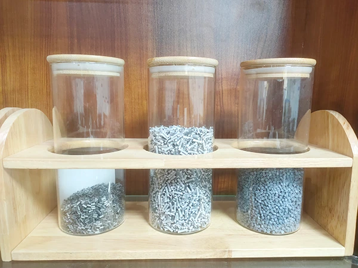
วัสดุนำไฟฟ้าและป้องกันไฟฟ้าสถิต↗วัสดุนําไฟฟ้าที่ผลิตจากPOM ใช้เทคโนโลยีเสริมใยโลหะแนวทางการใช้งานรวมถึงอุปกรณ์จัดการ ATM และธนบัตร ชิ้นส่วนกระดาษสัมผัสสําหรับเครื่องถ่ายเอกสาร ชิ้นส่วนรถยนต์ แท่ง แผ่น เฟือง ตลับลูกปืน และชิ้นส่วนไฟฟ้า;ตรวจสอบความต้านทานและสภาพการผลิตสําหรับเกรดและชิ้นส่วนสําเร็จรูป
 วัสดุนำไฟฟ้าและป้องกันไฟฟ้าสถิต↗
วัสดุนำไฟฟ้าและป้องกันไฟฟ้าสถิต↗วัสดุนําไฟฟ้าที่อิงกับPOM ใช้เทคโนโลยีปรับเปลี่ยนการนําไฟฟ้าเพื่อความต้องการความต้านทานต่ําแนวทางการใช้งานรวมถึงอุปกรณ์จัดการ ATM และธนบัตร ชิ้นส่วนกระดาษสัมผัสสําหรับเครื่องถ่ายเอกสาร ชิ้นส่วนรถยนต์ แท่ง แผ่น เฟือง ตลับลูกปืน และชิ้นส่วนไฟฟ้า;ตรวจสอบความต้านทานและสภาพการประมวลผลสําหรับเกรดและชิ้นส่วนสําเร็จรูป
 วัสดุนำไฟฟ้าและป้องกันไฟฟ้าสถิต↗
วัสดุนำไฟฟ้าและป้องกันไฟฟ้าสถิต↗วัสดุสแตติกที่ผลิตจากPOM ใช้เทคโนโลยีเสริมด้วยคาร์บอนไฟเบอร์แนวทางการใช้งานรวมถึงอุปกรณ์จัดการธนบัตรและเครื่องถ่ายเอกสาร ชิ้นส่วนสัมผัสกระดาษสําหรับถ่ายเอกสาร ชิ้นส่วนรถยนต์ แท่ง แผ่น เฟือง ตลับลูกปืน และชิ้นส่วนไฟฟ้า;ตรวจสอบความต้านทานและสภาพการผลิตสําหรับเกรดและชิ้นส่วนสําเร็จรูป
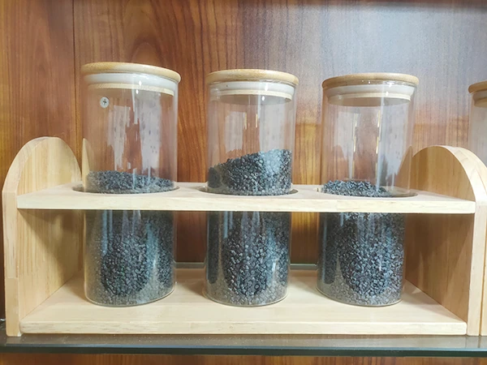
วัสดุนำไฟฟ้าและป้องกันไฟฟ้าสถิต↗วัสดุนําไฟฟ้าที่ผลิตจากPOM ใช้เทคโนโลยีเสริมด้วยคาร์บอนไฟเบอร์แนวทางการใช้งานรวมถึงอุปกรณ์จัดการธนบัตรและเครื่องถ่ายเอกสาร ชิ้นส่วนสัมผัสกระดาษสําหรับถ่ายเอกสาร ชิ้นส่วนรถยนต์ แท่ง แผ่น เฟือง ตลับลูกปืน และชิ้นส่วนไฟฟ้า;ตรวจสอบความทนทานและสภาพการแปรรูปสําหรับเกรดและชิ้นส่วนสําเร็จรูป
 วัสดุนำไฟฟ้าและป้องกันไฟฟ้าสถิต↗
วัสดุนำไฟฟ้าและป้องกันไฟฟ้าสถิต↗วัสดุสแตติกที่ผลิตจากPOM ใช้เทคโนโลยีคาร์บอนดําดัดแปลงแนวทางการใช้งานรวมถึงอุปกรณ์จัดการธนบัตรและเครื่องถ่ายเอกสาร ชิ้นส่วนกระดาษสัมผัสสําหรับเครื่องถ่ายเอกสาร ชิ้นส่วนรถยนต์ แท่ง แผ่น เฟือง ตลับลูกปืน และชิ้นส่วนไฟฟ้า;ตรวจสอบความทนทานและสภาพการผลิตสําหรับเกรดและชิ้นส่วนสําเร็จรูป
 วัสดุนำไฟฟ้าและป้องกันไฟฟ้าสถิต↗
วัสดุนำไฟฟ้าและป้องกันไฟฟ้าสถิต↗วัสดุนําไฟฟ้าที่ผลิตจากPOM ใช้เทคโนโลยีคาร์บอนดําดัดแปลงแนวทางการใช้งานรวมถึงอุปกรณ์จัดการ ATM และธนบัตร ชิ้นส่วนกระดาษสัมผัสสําหรับเครื่องถ่ายเอกสาร ชิ้นส่วนรถยนต์ แท่ง แผ่น เฟือง ตลับลูกปืน และชิ้นส่วนไฟฟ้า;ตรวจสอบความทนทานและสภาพการผลิตสําหรับเกรดและชิ้นส่วนสําเร็จรูป
 วัสดุนำไฟฟ้าและป้องกันไฟฟ้าสถิต↗
วัสดุนำไฟฟ้าและป้องกันไฟฟ้าสถิต↗วัสดุป้องกันไฟฟ้าสถิตถาวรที่ผลิตจากPC/ABS ใช้เทคโนโลยีการดัดแปลงโพลิเมอร์ต้านไฟฟ้าสถิตที่มีทิศทางการผสมสารหน่วงไฟแนวทางการใช้งานรวมถึงแหนบ ตัวเครื่องโทรศัพท์และกล้อง ตัวเครื่องใช้ไฟฟ้า ถาดชิป ชิ้นส่วนอิเล็กทรอนิกส์ แผ่นบรรจุภัณฑ์ และชิ้นส่วนอิเล็กทรอนิกส์;ตรวจสอบความทนทานและสภาพการผลิตสําหรับเกรดและชิ้นส่วนสําเร็จรูป
 วัสดุนำไฟฟ้าและป้องกันไฟฟ้าสถิต↗
วัสดุนำไฟฟ้าและป้องกันไฟฟ้าสถิต↗วัสดุป้องกันไฟฟ้าสถิตถาวรที่ผลิตจากPC ใช้เทคโนโลยีการดัดแปลงไฟฟ้าสถิตแบบโพลิเมอร์แนวทางการใช้งานรวมถึงแหนบ ตัวเรือนโทรศัพท์และกล้อง ตัวเครื่องใช้ไฟฟ้า ถาดชิป ชิ้นส่วนอิเล็กทรอนิกส์ แผ่นบรรจุภัณฑ์ และชิ้นส่วนอิเล็กทรอนิกส์;ตรวจสอบความทนทานและสภาพการผลิตสําหรับเกรดและชิ้นส่วนสําเร็จรูป
 วัสดุนำไฟฟ้าและป้องกันไฟฟ้าสถิต↗
วัสดุนำไฟฟ้าและป้องกันไฟฟ้าสถิต↗วัสดุป้องกันไฟฟ้าสถิตถาวรที่ผลิตจากPC ใช้เทคโนโลยีการดัดแปลงไฟฟ้าสถิตแบบโพลิเมอร์แนวทางการใช้งานรวมถึงแหนบ ตัวเรือนโทรศัพท์และกล้อง ตัวเครื่องใช้ไฟฟ้า ถาดชิป ชิ้นส่วนอิเล็กทรอนิกส์ แผ่นบรรจุภัณฑ์ และชิ้นส่วนอิเล็กทรอนิกส์;ตรวจสอบความทนทานและสภาพการผลิตสําหรับเกรดและชิ้นส่วนสําเร็จรูป
 วัสดุนำไฟฟ้าและป้องกันไฟฟ้าสถิต↗
วัสดุนำไฟฟ้าและป้องกันไฟฟ้าสถิต↗วัสดุสแตติกที่ผลิตจากPC ใช้เทคโนโลยีเสริมใยโลหะแนวทางการใช้งานรวมถึงแหนบ ตัวเรือนโทรศัพท์และกล้อง ตัวเครื่องใช้ไฟฟ้า ถาดชิป ชิ้นส่วนอิเล็กทรอนิกส์ แผ่นบรรจุภัณฑ์ และชิ้นส่วนอิเล็กทรอนิกส์;ตรวจสอบความทนทานและสภาพการผลิตสําหรับเกรดและชิ้นส่วนสําเร็จรูป
 วัสดุนำไฟฟ้าและป้องกันไฟฟ้าสถิต↗
วัสดุนำไฟฟ้าและป้องกันไฟฟ้าสถิต↗วัสดุนําไฟฟ้าที่ผลิตจากABS ใช้เทคโนโลยีเสริมใยโลหะแนวทางการใช้งานรวมถึงแหนบ ตัวเรือนโทรศัพท์และกล้อง ตัวเครื่องใช้ไฟฟ้า ถาดชิป ชิ้นส่วนอิเล็กทรอนิกส์ แผ่นบรรจุภัณฑ์ และชิ้นส่วนอิเล็กทรอนิกส์;ตรวจสอบความทนทานและสภาพการผลิตสําหรับเกรดและชิ้นส่วนสําเร็จรูป
 วัสดุนำไฟฟ้าและป้องกันไฟฟ้าสถิต↗
วัสดุนำไฟฟ้าและป้องกันไฟฟ้าสถิต↗วัสดุนําไฟฟ้าที่ผลิตจากABS ใช้เทคโนโลยีเสริมคาร์บอนไฟเบอร์พร้อมทิศทางการผสมสารหน่วงไฟแนวทางการใช้งานรวมถึงแหนบ ตัวเรือนโทรศัพท์และกล้อง ตัวเครื่องใช้ไฟฟ้า ถาดชิป ชิ้นส่วนอิเล็กทรอนิกส์ แผ่นบรรจุภัณฑ์ และชิ้นส่วนอิเล็กทรอนิกส์;ตรวจสอบความทนทานและสภาพการผลิตสําหรับเกรดและชิ้นส่วนสําเร็จรูป
 วัสดุนำไฟฟ้าและป้องกันไฟฟ้าสถิต↗
วัสดุนำไฟฟ้าและป้องกันไฟฟ้าสถิต↗วัสดุสแตติกที่สลายพลังงานตามABS ใช้เทคโนโลยีเสริมคาร์บอนไฟเบอร์แนวทางการใช้งานรวมถึงแหนบ ตัวเรือนโทรศัพท์และกล้อง ตัวเครื่องใช้ไฟฟ้า ถาดชิป ชิ้นส่วนอิเล็กทรอนิกส์ แผ่นบรรจุภัณฑ์ และชิ้นส่วนอิเล็กทรอนิกส์;ตรวจสอบความทนทานและสภาพการผลิตสําหรับเกรดและชิ้นส่วนสําเร็จรูป
 วัสดุนำไฟฟ้าและป้องกันไฟฟ้าสถิต↗
วัสดุนำไฟฟ้าและป้องกันไฟฟ้าสถิต↗วัสดุนําไฟฟ้าที่ผลิตจากPC ใช้เทคโนโลยีเสริมใยคาร์บอนแนวทางการใช้งานรวมถึงแหนบ ตัวเรือนโทรศัพท์และกล้อง ตัวเครื่องใช้ไฟฟ้า ถาดชิป ชิ้นส่วนอิเล็กทรอนิกส์ แผ่นบรรจุภัณฑ์ และชิ้นส่วนอิเล็กทรอนิกส์;ตรวจสอบความทนทานและสภาพการแปรรูปสําหรับเกรดและชิ้นส่วนสําเร็จรูป
 วัสดุนำไฟฟ้าและป้องกันไฟฟ้าสถิต↗
วัสดุนำไฟฟ้าและป้องกันไฟฟ้าสถิต↗วัสดุสแตติกที่ผลิตจากPC ใช้เทคโนโลยีคาร์บอนดําที่ปรับแต่งแนวทางการใช้งานรวมถึงแหนบ ตัวเรือนโทรศัพท์และกล้อง ตัวเครื่องใช้ไฟฟ้า ถาดชิป ชิ้นส่วนอิเล็กทรอนิกส์ แผ่นบรรจุภัณฑ์ และชิ้นส่วนอิเล็กทรอนิกส์;ตรวจสอบความทนทานและสภาพการผลิตสําหรับเกรดและชิ้นส่วนสําเร็จรูป
 วัสดุนำไฟฟ้าและป้องกันไฟฟ้าสถิต↗
วัสดุนำไฟฟ้าและป้องกันไฟฟ้าสถิต↗วัสดุนําไฟฟ้าที่ผลิตจากPC ใช้เทคโนโลยีดัดแปลงคาร์บอนดําแนวทางการใช้งานรวมถึงแหนบ ตัวเรือนโทรศัพท์และกล้อง ตัวเครื่องใช้ไฟฟ้า ถาดชิป ชิ้นส่วนอิเล็กทรอนิกส์ แผ่นบรรจุภัณฑ์ และชิ้นส่วนอิเล็กทรอนิกส์;ตรวจสอบความทนทานและสภาพการผลิตสําหรับเกรดและชิ้นส่วนสําเร็จรูป
 วัสดุนำไฟฟ้าและป้องกันไฟฟ้าสถิต↗
วัสดุนำไฟฟ้าและป้องกันไฟฟ้าสถิต↗วัสดุป้องกันไฟฟ้าสถิตถาวรที่อิงตามPC/ABS ใช้เทคโนโลยีการดัดแปลงไฟฟ้าสถิตแบบโพลิเมอร์แนวทางการใช้งานรวมถึงแหนบ ตัวเรือนโทรศัพท์และกล้อง ตัวเครื่องใช้ไฟฟ้า ถาดชิป ชิ้นส่วนอิเล็กทรอนิกส์ แผ่นบรรจุภัณฑ์ และชิ้นส่วนอิเล็กทรอนิกส์;ตรวจสอบความทนทานและสภาพการแปรรูปสําหรับเกรดและชิ้นส่วนสําเร็จรูป
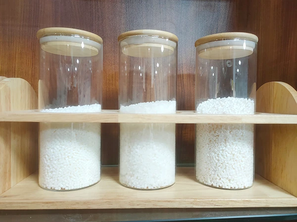
วัสดุนำไฟฟ้าและป้องกันไฟฟ้าสถิต↗วัสดุป้องกันไฟฟ้าสถิตถาวรที่ผลิตจากPC ใช้เทคโนโลยีการดัดแปลงโพลิเมอร์ต้านไฟฟ้าสถิตที่มีทิศทางการปรุงสูตรหน่วงไฟแนวทางการใช้งานรวมถึงแผ่นไม้ แผ่นเทปพาหะ โปรไฟล์ แหนบ ชิ้นส่วนอิเล็กทรอนิกส์ ตัวเรือนไฟฟ้า ภาชนะ และอุปกรณ์สื่อสาร;ตรวจสอบความทนทานและสภาพการแปรรูปสําหรับเกรดและชิ้นส่วนสําเร็จรูป
 วัสดุนำไฟฟ้าและป้องกันไฟฟ้าสถิต↗
วัสดุนำไฟฟ้าและป้องกันไฟฟ้าสถิต↗วัสดุสแตติกที่สลายพลังงานตามPC ใช้เทคโนโลยีเสริมใยโลหะแนวทางการใช้งานรวมถึงแผ่นไม้ แผ่นเทปพาหะ โปรไฟล์ แหนบ ชิ้นส่วนอิเล็กทรอนิกส์ ตัวเรือน ภาชนะ และอุปกรณ์สื่อสาร;ตรวจสอบความทนทานและสภาพการผลิตสําหรับเกรดและชิ้นส่วนสําเร็จรูป
 วัสดุนำไฟฟ้าและป้องกันไฟฟ้าสถิต↗
วัสดุนำไฟฟ้าและป้องกันไฟฟ้าสถิต↗วัสดุนําไฟฟ้าที่ผลิตจากPC ใช้เทคโนโลยีเสริมใยโลหะแนวทางการใช้งานรวมถึงแผ่นไม้ แผ่นเทปพาหะ โปรไฟล์ แหนบ ชิ้นส่วนอิเล็กทรอนิกส์ ตัวเรือน ภาชนะ และอุปกรณ์สื่อสาร;ตรวจสอบความทนทานและสภาพการแปรรูปสําหรับเกรดและชิ้นส่วนสําเร็จรูป
 วัสดุนำไฟฟ้าและป้องกันไฟฟ้าสถิต↗
วัสดุนำไฟฟ้าและป้องกันไฟฟ้าสถิต↗วัสดุสถิตที่สลายพลังงานตามPC ใช้เทคโนโลยีเสริมคาร์บอนไฟเบอร์พร้อมทิศทางการปรุงสูตรหน่วงไฟแนวทางการใช้งานรวมถึงแผ่นไม้ แผ่นเทปพาหะ โปรไฟล์ แหนบ ชิ้นส่วนอิเล็กทรอนิกส์ ตัวเรือน ภาชนะ และอุปกรณ์สื่อสาร;ตรวจสอบความทนทานและสภาพการผลิตสําหรับเกรดและชิ้นส่วนสําเร็จรูป
 วัสดุนำไฟฟ้าและป้องกันไฟฟ้าสถิต↗
วัสดุนำไฟฟ้าและป้องกันไฟฟ้าสถิต↗วัสดุนําไฟฟ้าที่ผลิตจากPC ใช้เทคโนโลยีเสริมคาร์บอนไฟเบอร์พร้อมทิศทางการคํานวณแบบหน่วงไฟแนวทางการใช้งานรวมถึงแผ่นไม้ แผ่นเทปพาหะ โปรไฟล์ แหนบ ชิ้นส่วนอิเล็กทรอนิกส์ ตัวเรือน ภาชนะ และอุปกรณ์สื่อสาร;ตรวจสอบความทนทานและสภาพการผลิตสําหรับเกรดและชิ้นส่วนสําเร็จรูป
 วัสดุนำไฟฟ้าและป้องกันไฟฟ้าสถิต↗
วัสดุนำไฟฟ้าและป้องกันไฟฟ้าสถิต↗วัสดุสแตติกที่ผลิตจากPC ใช้เทคโนโลยีเสริมคาร์บอนไฟเบอร์แนวทางการใช้งานรวมถึงแผ่นไม้ แผ่นเทปพาหะ โปรไฟล์ แหนบ ชิ้นส่วนอิเล็กทรอนิกส์ ตัวเรือน ภาชนะ และอุปกรณ์สื่อสาร;ตรวจสอบความทนทานและสภาพการแปรรูปสําหรับเกรดและชิ้นส่วนสําเร็จรูป
 วัสดุนำไฟฟ้าและป้องกันไฟฟ้าสถิต↗
วัสดุนำไฟฟ้าและป้องกันไฟฟ้าสถิต↗วัสดุนําไฟฟ้าที่อิงจากPC ใช้เทคโนโลยีเสริมคาร์บอนไฟเบอร์แนวทางการใช้งานรวมถึงแผ่นไม้ แผ่นเทปพาหะ โปรไฟล์ แหนบ ชิ้นส่วนอิเล็กทรอนิกส์ ตัวเรือน ภาชนะ และอุปกรณ์สื่อสาร;ตรวจสอบความทนทานและสภาพการผลิตสําหรับเกรดและชิ้นส่วนสําเร็จรูป
 วัสดุนำไฟฟ้าและป้องกันไฟฟ้าสถิต↗
วัสดุนำไฟฟ้าและป้องกันไฟฟ้าสถิต↗วัสดุนําไฟฟ้าที่ผลิตจากPC ใช้เทคโนโลยีเสริมใยคาร์บอนเพื่อความต้องการความต้านทานต่ําแนวทางการใช้งานรวมถึงแผ่นไม้ แผ่นเทปพาหะ โปรไฟล์ แหนบ ชิ้นส่วนอิเล็กทรอนิกส์ ตัวเรือน ภาชนะ และอุปกรณ์สื่อสาร;ตรวจสอบความทนทานและสภาพการผลิตสําหรับเกรดและชิ้นส่วนสําเร็จรูป
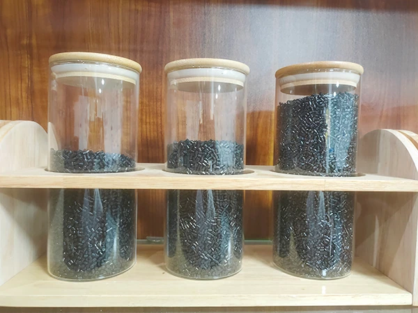
วัสดุนำไฟฟ้าและป้องกันไฟฟ้าสถิต↗วัสดุสถิตที่สลายพลังงานตามPC ใช้เทคโนโลยีคาร์บอนดําดัดแปลงพร้อมทิศทางการผสมสารหน่วงไฟแนวทางการใช้งานรวมถึงแผ่นไม้ แผ่นเทปพาหะ โปรไฟล์ แหนบ ชิ้นส่วนอิเล็กทรอนิกส์ ตัวเครื่องไฟฟ้า ภาชนะ และอุปกรณ์สื่อสาร;ตรวจสอบความทนทานและสภาพการประมวลผลสําหรับเกรดและชิ้นส่วนสําเร็จรูป
 วัสดุนำไฟฟ้าและป้องกันไฟฟ้าสถิต↗
วัสดุนำไฟฟ้าและป้องกันไฟฟ้าสถิต↗วัสดุนําไฟฟ้าที่ผลิตจากPC ใช้เทคโนโลยีคาร์บอนดําดัดแปลงพร้อมทิศทางการปรุงสูตรหน่วงไฟแนวทางการใช้งานรวมถึงแผ่นไม้ แผ่นเทปพาหะ โปรไฟล์ แหนบ ชิ้นส่วนอิเล็กทรอนิกส์ ตัวเรือนไฟฟ้า ภาชนะ และอุปกรณ์สื่อสาร;ตรวจสอบความทนทานและสภาพการแปรรูปสําหรับเกรดและชิ้นส่วนสําเร็จรูป
 วัสดุนำไฟฟ้าและป้องกันไฟฟ้าสถิต↗
วัสดุนำไฟฟ้าและป้องกันไฟฟ้าสถิต↗วัสดุสแตติกที่ผลิตจากPC ใช้เทคโนโลยีคาร์บอนแบล็คดัดแปลงแนวทางการใช้งานรวมถึงแผ่นไม้ แผ่นเทปพาหะ โปรไฟล์ แหนบ ชิ้นส่วนอิเล็กทรอนิกส์ ตัวเรือน ภาชนะ และอุปกรณ์สื่อสาร;ตรวจสอบความทนทานและสภาพการแปรรูปสําหรับเกรดและชิ้นส่วนสําเร็จรูป
 วัสดุนำไฟฟ้าและป้องกันไฟฟ้าสถิต↗
วัสดุนำไฟฟ้าและป้องกันไฟฟ้าสถิต↗วัสดุสแตติกที่ผลิตจากPC ใช้เทคโนโลยีคาร์บอนแบล็คดัดแปลงแนวทางการใช้งานรวมถึงแผ่นไม้ แผ่นเทปพาหะ โปรไฟล์ แหนบ ชิ้นส่วนอิเล็กทรอนิกส์ ตัวเรือน ภาชนะ และอุปกรณ์สื่อสาร;ตรวจสอบความทนทานและสภาพการแปรรูปสําหรับเกรดและชิ้นส่วนสําเร็จรูป
 วัสดุนำไฟฟ้าและป้องกันไฟฟ้าสถิต↗
วัสดุนำไฟฟ้าและป้องกันไฟฟ้าสถิต↗วัสดุนําไฟฟ้าที่อิงจากPC ใช้เทคโนโลยีคาร์บอนแบล็คดัดแปลงแนวทางการใช้งานรวมถึงแผ่นไม้ แผ่นเทปพาหะ โปรไฟล์ แหนบ ชิ้นส่วนอิเล็กทรอนิกส์ ตัวเรือน ภาชนะ และอุปกรณ์สื่อสาร;ตรวจสอบความทนทานและสภาพการประมวลผลสําหรับเกรดและชิ้นส่วนสําเร็จรูป
 วัสดุนำไฟฟ้าและป้องกันไฟฟ้าสถิต↗
วัสดุนำไฟฟ้าและป้องกันไฟฟ้าสถิต↗วัสดุนําไฟฟ้าที่อิงจากPC ใช้เทคโนโลยีคาร์บอนแบล็คดัดแปลงแนวทางการใช้งานรวมถึงแผ่นไม้ แผ่นเทปพาหะ โปรไฟล์ แหนบ ชิ้นส่วนอิเล็กทรอนิกส์ ตัวเรือน ภาชนะ และอุปกรณ์สื่อสาร;ตรวจสอบความทนทานและสภาพการประมวลผลสําหรับเกรดและชิ้นส่วนสําเร็จรูป
 วัสดุนำไฟฟ้าและป้องกันไฟฟ้าสถิต↗
วัสดุนำไฟฟ้าและป้องกันไฟฟ้าสถิต↗วัสดุป้องกันไฟฟ้าสถิตถาวรที่ผลิตจากPBT ใช้การดัดแปลงด้วยโพลิเมอร์ต้านไฟฟ้าสถิตด้วยเทคโนโลยีเสริมใยแก้วแนวทางการใช้งานรวมถึงชิ้นส่วนรถยนต์ ตัวเรือนไฟฟ้า และชิ้นส่วนอิเล็กทรอนิกส์;ตรวจสอบความทนทานและสภาพการแปรรูปสําหรับเกรดและชิ้นส่วนสําเร็จรูป
 วัสดุนำไฟฟ้าและป้องกันไฟฟ้าสถิต↗
วัสดุนำไฟฟ้าและป้องกันไฟฟ้าสถิต↗วัสดุนําไฟฟ้าที่ผลิตจากPBT ใช้เทคโนโลยีเสริมใยโลหะแนวทางการใช้งานรวมถึงชิ้นส่วนรถยนต์ ตัวเรือนไฟฟ้า และชิ้นส่วนอิเล็กทรอนิกส์;ตรวจสอบความทนทานและสภาพการผลิตสําหรับเกรดและชิ้นส่วนสําเร็จรูป
 วัสดุนำไฟฟ้าและป้องกันไฟฟ้าสถิต↗
วัสดุนำไฟฟ้าและป้องกันไฟฟ้าสถิต↗วัสดุสแตติกที่สลายตัวได้โดยใช้PBT ใช้เทคโนโลยีเสริมคาร์บอนไฟเบอร์ที่มีทิศทางการก่อสารหน่วงไฟแนวทางการใช้งานรวมถึงชิ้นส่วนรถยนต์ ตัวเรือนไฟฟ้า และชิ้นส่วนอิเล็กทรอนิกส์;ตรวจสอบความทนทานและสภาพการแปรรูปสําหรับเกรดและชิ้นส่วนสําเร็จรูป
 วัสดุนำไฟฟ้าและป้องกันไฟฟ้าสถิต↗
วัสดุนำไฟฟ้าและป้องกันไฟฟ้าสถิต↗วัสดุนําไฟฟ้าที่ผลิตจากPBT ใช้เทคโนโลยีเสริมคาร์บอนไฟเบอร์พร้อมทิศทางการปรุงสูตรกันไฟแนวทางการใช้งานรวมถึงชิ้นส่วนรถยนต์ ตัวเรือนไฟฟ้า และชิ้นส่วนอิเล็กทรอนิกส์;ตรวจสอบความทนทานและสภาพการผลิตสําหรับเกรดและชิ้นส่วนสําเร็จรูป
 วัสดุนำไฟฟ้าและป้องกันไฟฟ้าสถิต↗
วัสดุนำไฟฟ้าและป้องกันไฟฟ้าสถิต↗วัสดุสแตติกที่สลายพลังงานตามPBT ใช้เทคโนโลยีเสริมด้วยคาร์บอนไฟเบอร์แนวทางการใช้งานรวมถึงชิ้นส่วนรถยนต์ ตัวเรือนไฟฟ้า และชิ้นส่วนอิเล็กทรอนิกส์;ตรวจสอบความทนทานและสภาพการแปรรูปสําหรับเกรดและชิ้นส่วนสําเร็จรูป
 วัสดุนำไฟฟ้าและป้องกันไฟฟ้าสถิต↗
วัสดุนำไฟฟ้าและป้องกันไฟฟ้าสถิต↗วัสดุนําไฟฟ้าที่ผลิตจากPBT ใช้เทคโนโลยีเสริมด้วยคาร์บอนไฟเบอร์แนวทางการใช้งานรวมถึงชิ้นส่วนรถยนต์ ตัวเรือนไฟฟ้า และชิ้นส่วนอิเล็กทรอนิกส์;ตรวจสอบความทนทานและสภาพการแปรรูปสําหรับเกรดและชิ้นส่วนสําเร็จรูป
 วัสดุนำไฟฟ้าและป้องกันไฟฟ้าสถิต↗
วัสดุนำไฟฟ้าและป้องกันไฟฟ้าสถิต↗วัสดุป้องกันไฟฟ้าสถิตถาวรที่อิงจากMPPO/MPPE ใช้เทคโนโลยีการดัดแปลงโพลิเมอร์ป้องกันไฟฟ้าสถิตแนวทางการใช้งานรวมถึงถาดชิป โต๊ะหมุน แผ่นบรรจุภัณฑ์ชิ้นส่วนอิเล็กทรอนิกส์ ชิ้นส่วน ATM และชิ้นส่วนไฟฟ้า;ตรวจสอบความทนทานและสภาพการประมวลผลสําหรับเกรดและชิ้นส่วนสําเร็จรูป
 วัสดุนำไฟฟ้าและป้องกันไฟฟ้าสถิต↗
วัสดุนำไฟฟ้าและป้องกันไฟฟ้าสถิต↗วัสดุนําไฟฟ้าที่ผลิตจากMPPO/MPPE ใช้เทคโนโลยีเสริมใยโลหะแนวทางการใช้งานรวมถึงถาดชิป โต๊ะหมุน แผ่นบรรจุภัณฑ์ชิ้นส่วนอิเล็กทรอนิกส์ ชิ้นส่วน ATM และชิ้นส่วนไฟฟ้า;ตรวจสอบสภาพความต้านทานและกระบวนการสําหรับเกรดและชิ้นส่วนสําเร็จรูป
 วัสดุนำไฟฟ้าและป้องกันไฟฟ้าสถิต↗
วัสดุนำไฟฟ้าและป้องกันไฟฟ้าสถิต↗วัสดุสแตติกที่สลายพลังงานตามMPPO/MPPE ใช้เทคโนโลยีเสริมคาร์บอนไฟเบอร์แนวทางการใช้งานรวมถึงถาดชิป โต๊ะหมุน แผ่นบรรจุภัณฑ์ชิ้นส่วนอิเล็กทรอนิกส์ ชิ้นส่วน ATM และชิ้นส่วนไฟฟ้า;ตรวจสอบความต้านทานและสภาพการประมวลผลสําหรับเกรดและชิ้นส่วนสําเร็จรูป
 วัสดุนำไฟฟ้าและป้องกันไฟฟ้าสถิต↗
วัสดุนำไฟฟ้าและป้องกันไฟฟ้าสถิต↗วัสดุนําไฟฟ้าที่ผลิตจากMPPO/MPPE ใช้เทคโนโลยีเสริมด้วยคาร์บอนไฟเบอร์แนวทางการใช้งานรวมถึงถาดชิป โต๊ะหมุน แผ่นบรรจุภัณฑ์ชิ้นส่วนอิเล็กทรอนิกส์ ชิ้นส่วน ATM และชิ้นส่วนไฟฟ้า;ตรวจสอบความทนทานและสภาพการประมวลผลสําหรับเกรดและชิ้นส่วนสําเร็จรูป
 วัสดุนำไฟฟ้าและป้องกันไฟฟ้าสถิต↗
วัสดุนำไฟฟ้าและป้องกันไฟฟ้าสถิต↗วัสดุสแตติกที่ผลิตจากMPPO/MPPE โดยใช้เทคโนโลยีคาร์บอนแบล็คดัดแปลงแนวทางการใช้งานรวมถึงถาดชิป โต๊ะหมุน แผ่นบรรจุภัณฑ์ชิ้นส่วนอิเล็กทรอนิกส์ ชิ้นส่วน ATM และชิ้นส่วนไฟฟ้า;ตรวจสอบความทนทานและสภาพการประมวลผลสําหรับเกรดและชิ้นส่วนสําเร็จรูป
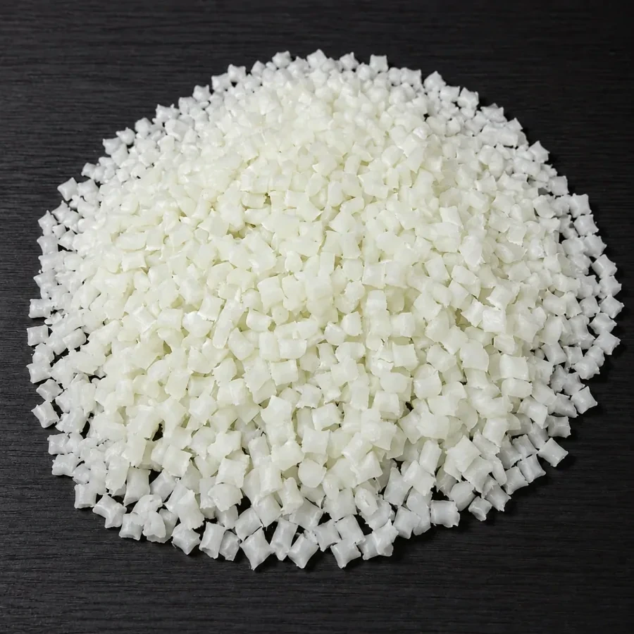
วัสดุเฉพาะอุตสาหกรรม↗พัฒนาวิธีแก้ปัญหาวัสดุสําหรับการบรรทุกบนฐานเก้าอี้ การบริการอย่างต่อเนื่อง และการประกอบล้อล้อรอบรูปทรงของชิ้นส่วน น้ําหนักบริการ และสภาพการขึ้นรูป
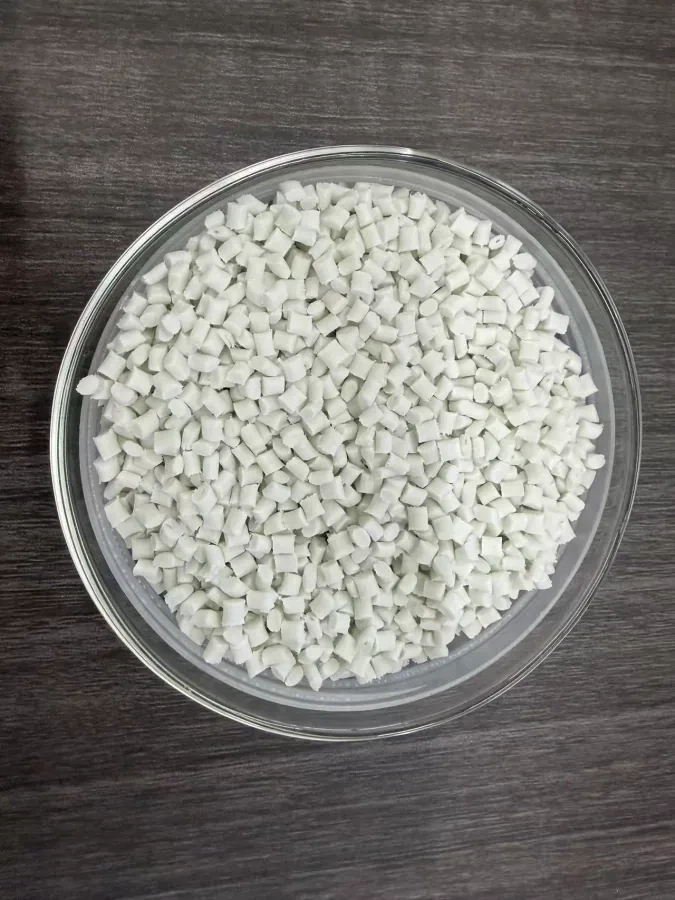
วัสดุเฉพาะอุตสาหกรรม↗กําหนดฟังก์ชันของชิ้นส่วน อุณหภูมิที่เพิ่มขึ้น ความหนาของผนัง และข้อกําหนดเป้าหมายก่อนเลือกเมทริกซ์และระบบปรับแต่งสําหรับการชาร์จปืนและตัวเชื่อมต่อ
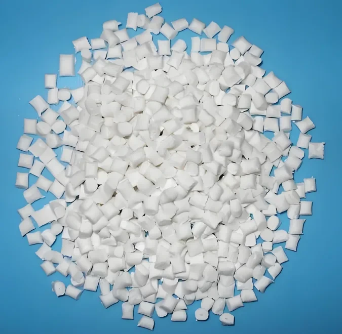
วัสดุเฉพาะอุตสาหกรรม↗พัฒนาวัสดุโดยรอบความแข็งแรงของใบพัด แรงหมุน และขนาดที่ขึ้นรูป โดยพิจารณาความเร็ว อุณหภูมิ และรูปทรงใบพัด;ตรวจสอบใบพัดและระบบที่ประกอบเสร็จ
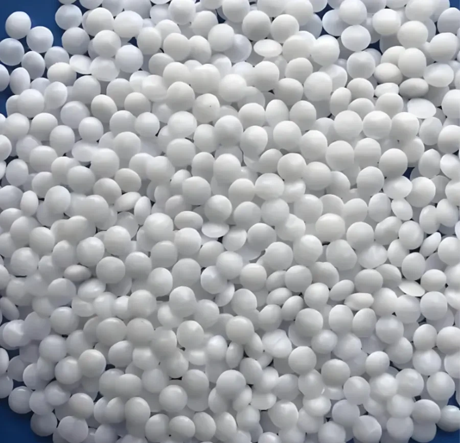
วัสดุเฉพาะอุตสาหกรรม↗กําหนดโซลูชันวัสดุสําหรับการส่งกําลังผ่านความแม่นยําของฟัน การรับน้ําหนัก และแรงเสียดทาน รวมถึงข้อกําหนดด้านการหล่อลื่น อุณหภูมิ เสียง และอายุการใช้งาน
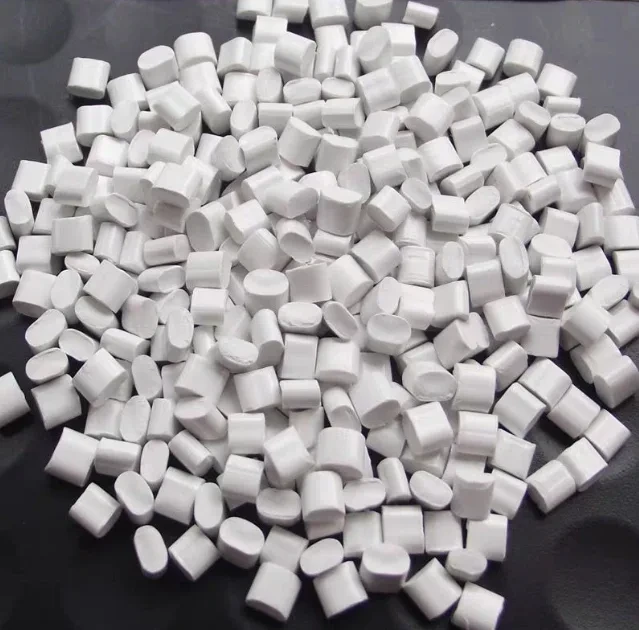
วัสดุเฉพาะอุตสาหกรรม↗เลือกวัสดุสําหรับฮาร์ดแวร์ AI และตัวเรือนอิเล็กทรอนิกส์ในเรื่องรูปลักษณ์ การขึ้นรูปผนังบาง การกระแทก และความร้อน;ระบุและตรวจสอบข้อกําหนดการควบคุมไฟฟ้าสถิตและแม่เหล็กไฟฟ้าแยกกันสําหรับแต่ละชิ้นส่วน
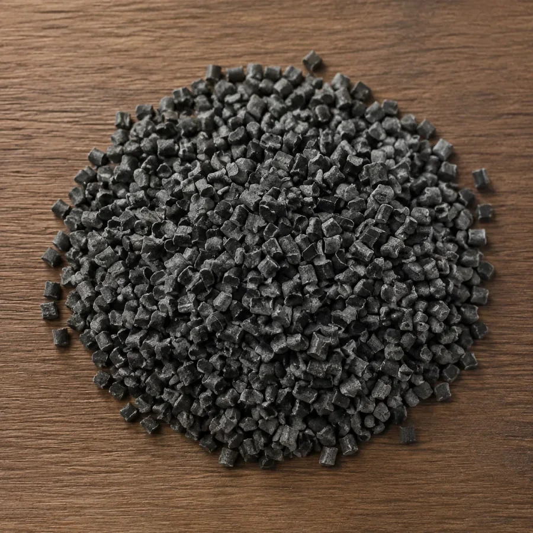
วัสดุเฉพาะอุตสาหกรรม↗พัฒนาวัสดุสําหรับกีฬากลางแจ้งและอุปกรณ์เสริมหมวกกันน็อครอบฟังก์ชันชิ้นส่วน โหมดแรงกระแทก แสงแดด และการเปลี่ยนแปลงอุณหภูมิกําหนดฟังก์ชันป้องกันใด ๆ และขอบเขตการตรวจสอบภายในโครงการ
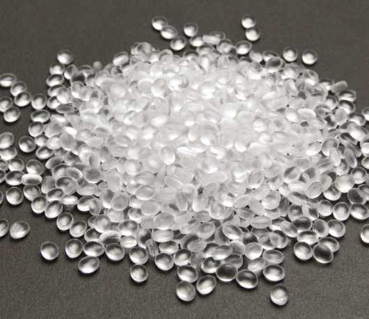
วัสดุเฉพาะอุตสาหกรรม↗กําหนดสื่อสัมผัส ระยะเวลา อุณหภูมิ และตลาดเป้าหมายก่อนเลือกเกรดและเอกสารสําหรับชิ้นส่วนเครื่องใช้สัมผัสอาหาร โดยพิจารณาจากความร้อน การทําความสะอาด กลิ่น และการประกอบ
แคตตาล็อกนี้แนะนําระบบวัสดุและทิศทางการทํางานยืนยันเกรดเฉพาะ ข้อมูลประสิทธิภาพ สี และการจัดการจัดหากับทีมวัสดุของเรา
วัสดุ / วิศวกรรม / ความเป็นไปได้